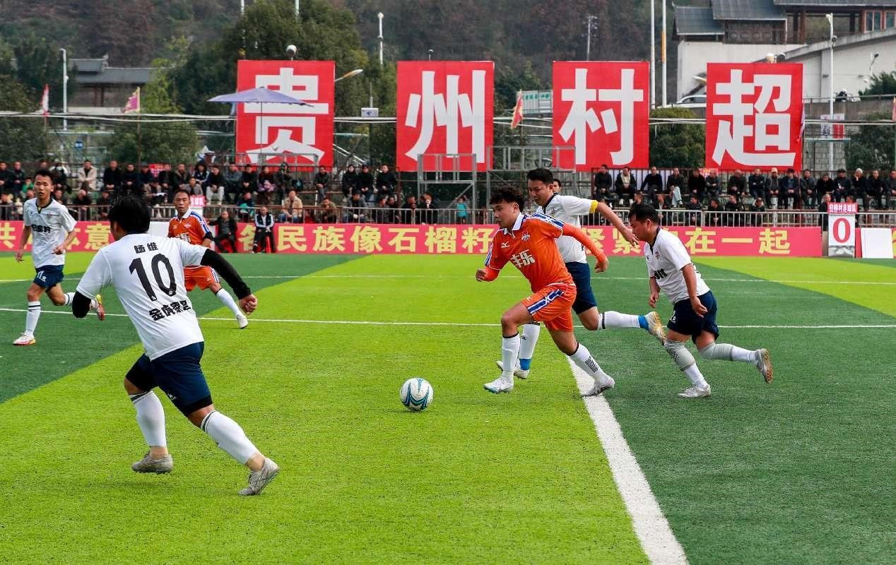
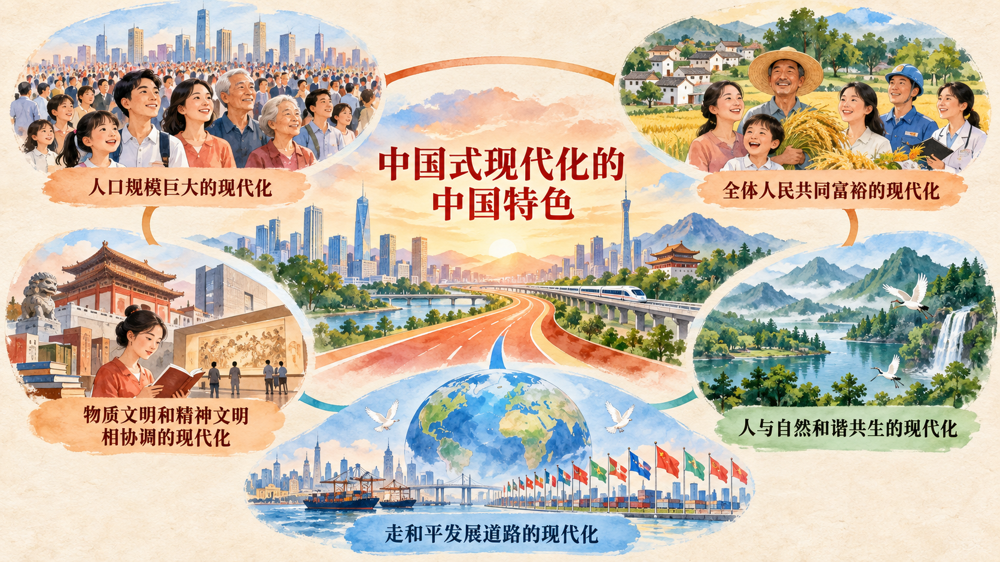

现代化为什么必须有“中国式”
工业化、城市化、科技进步和教育普及是现代化进程中常见的变化，但现代化从来不只是一组技术指标。谁来领导现代化，以什么制度组织发展，如何分配发展成果，怎样对待文化传统、自然环境和其他国家，都会塑造现代化的性质与结果。中国式现代化既遵循现代化的一般规律，又立足中国国情，体现社会主义建设规律和人类社会发展规律。
本节从四个层次理解中国式现代化：首先追溯党领导人民长期探索形成这条道路的历史过程；其次把握五个方面的中国特色；再次理解本质要求所规定的领导力量、制度属性和价值目标；最后从现代化模式多样性理解人类文明新形态。
一、中国式现代化是中国共产党领导人民长期探索和实践的重大成果
近代以来，现代化与民族独立、国家富强紧密相连。洋务运动、戊戌变法、辛亥革命等探索都曾试图改变国家积贫积弱的状况，但在半殖民地半封建社会条件下，没有找到能够完成民族独立和现代化建设的正确道路。中国共产党成立后，现代化探索有了坚持人民立场、能够组织社会力量并改变国家制度基础的领导核心。
新中国成立后，党领导人民建立社会主义基本制度，推进工业化建设，为现代化奠定根本政治前提和宝贵经验、理论准备、物质基础。改革开放和社会主义现代化建设新时期，党作出把党和国家工作中心转移到经济建设上来、实行改革开放的历史性决策，开创中国特色社会主义道路，对现代化建设作出“三步走”战略安排。进入新时代，党在已有基础上不断推进理论和实践创新，进一步深化对中国式现代化内涵和本质的认识，明确全面建成社会主义现代化强国的战略安排。
这段历史说明，中国式现代化不是从外部搬来的一套现成模板，而是在解决中国问题的长期实践中形成的。革命改变现代化建设的政治前提，社会主义建设建立制度和工业基础，改革开放释放发展活力，新时代在新的历史条件下推进现代化的理论和实践创新。各阶段面对的任务不同，却共同构成中国式现代化道路的历史积累。
参考资料｜孙中山《建国方略》中的现代化愿望
孙中山较早提出“振兴中华”的口号，并强调“建设为革命之唯一目的”。在《建国方略》中，他设想通过交通、港口、水利、城市和产业建设改变中国贫弱状况。教材将《建国方略》称为近代中国谋求现代化的第一份蓝图。它呈现了近代先进中国人把民族独立与国家建设联系起来的努力，也反映出在当时社会制度和政治条件下，宏大建设构想难以全面落地。
把《建国方略》放入中国式现代化的探索史，可以看见两个层次：一方面，建设现代工业、交通和城市的愿望具有历史连续性；另一方面，现代化不能只靠工程清单，还需要能够维护国家独立、组织人民力量并持续推动建设的政治领导和制度条件。中国共产党领导人民完成民族独立、建立社会主义制度并推进现代化建设，使近代以来的复兴愿望获得新的实现基础。
资料来源：习近平《在纪念孙中山先生诞辰 150 周年大会上的讲话》，2016 年 11 月 11 日；《习近平新时代中国特色社会主义思想概论》统编教材第二章。
二、中国式现代化的中国特色
教材指出：“中国式现代化，是中国共产党领导的社会主义现代化，既有各国现代化的共同特征，更有基于自己国情的中国特色。”这一判断首先规定中国式现代化的领导力量和社会主义性质，继而说明它不是否定一般规律，而是把一般规律同中国具体实际结合起来。五个方面的中国特色，分别回应人口条件、分配目标、文明结构、生态边界和对外关系，共同构成中国式现代化的整体形态。
第一，中国式现代化是人口规模巨大的现代化。十四亿多人口整体迈进现代化社会，其规模超过现有发达国家人口的总和。人口规模巨大意味着现代化能够惠及更广泛的人群，也意味着就业、教育、医疗、住房、养老、能源和公共服务必须在巨大的需求规模与明显的地区差异中组织起来。推进现代化既要有全国性的制度安排，也要因地制宜解决不同区域、城乡和群体的具体问题。
第二，中国式现代化是全体人民共同富裕的现代化。共同富裕是中国特色社会主义的本质要求，也是一个长期历史过程。它要求不断做大社会财富总量，同时通过制度安排处理效率和公平、发展和共享的关系，使发展成果更多更公平惠及全体人民。共同富裕不是整齐划一的平均主义，也不是少数人富裕以后多数人被长期排除在发展机会之外。
案例研究｜复兴号飞驰，慢火车为什么仍要悠悠前行
复兴号以时速 350 公里连接大城市和城市群，承德至兴隆县间的 6433/6434 次列车却要用 2 小时 47 分钟走完 101 公里，同一区间乘坐高铁约需 20 分钟。这趟列车经停 13 个车站，最低票价 1 元、最高 6.5 元，自开行以来没有涨价。2024 年《民生周刊》报道，全国铁路系统当时仍有 81 对公益性慢火车，覆盖 20 余个省区市。
速度差异背后是不同乘客的生活方式。87 岁的兰义成从新杖子站上车，把前一天采摘的两筐山野菜运到承德市区售卖。乘车 56 分钟后到站，两筐菜大约能够卖一百至二百元，往返车票一共 4 元；如果乘坐客车，往返约需 30 元，而且很难携带大筐。沿线不少村民也挑着几十斤乃至上百斤的果蔬和山货上车，被熟悉他们的列车员称为“大筐队”。对这些生产规模较小、年龄偏大的农户来说，慢火车把分散的家庭生产同城市市场连接起来。
从客流和票款看，这趟列车很难成为高收益线路。2023 年，6433 次发送旅客 5.4 万人次，日均 148 人次；6434 次发送旅客 2.8 万人次，日均 76 人次。报道以 6434 次为例测算，即使所有乘客都购买 6.5 元的最高票价，全年票款也只有约 18.2 万元，而一趟三节车厢的列车需要车长、列车员、检车员和司机等 7 名铁路职工共同保障运行。这解释了为什么公益性慢火车不能只按票款收入决定是否保留。
铁路部门没有把公益理解为维持低水平服务，而是针对乘客需要改造运行方式。车厢一侧的小座席被改成存放大筐的专用货架，车站和列车为村民开辟绿色通道，工作人员帮助抬筐、整理货架并维护上下车秩序。列车长建立微信群，发布列车开行和农副产品价格信息；青年志愿服务队在客流高峰随车帮助老年旅客。报道发布时，铁路部门还计划把非空调车体更换为空调车体，提高乘车舒适度。
复兴号与慢火车并不代表“先进”和“落后”两条互相排斥的道路。复兴号提高人口和要素在主要城市之间流动的效率，公益性慢火车则使偏远地区群众能够以可承受成本进入市场和公共服务网络。人口规模巨大的现代化需要建设高效率交通骨干，也要根据不同地区、收入和年龄群体的真实条件保留基础性服务；全体人民共同富裕要求提高整体发展水平，也要求不断扩大参与发展和分享成果的机会。
讨论题
- 如果你是铁路运营者，会用哪些指标评价一趟公益性慢火车的价值？为什么不能只看票款收入？
- 在高铁、公路和私家车越来越普及的情况下，慢火车最不可替代的功能是什么？
- 如果利用数字技术继续改进这趟列车，你会设计什么服务，同时避免让不会使用智能手机的老人更不方便？
资料来源：郭鹏《开往幸福的公益慢火车》，《民生周刊》，2024 年 5 月 27 日。
第三，中国式现代化是物质文明和精神文明相协调的现代化。物质贫困不是社会主义，精神贫乏也不是社会主义。现代化既要不断厚植人民幸福生活的物质条件，也要发展社会主义先进文化、弘扬革命文化、传承中华优秀传统文化，增强人民精神力量。文化生活、公共精神和价值追求不是经济发展以后的装饰，而是人的全面发展和社会团结的重要内容。
案例研究｜贵州“村超”：一场足球赛怎样连接文化生活与乡村发展
贵州省榕江县“村超”不是职业俱乐部复制到乡村的赛事。村寨以自己的方式组队，球员来自各行各业，村民既是组织者、参赛者，也是观众和传播者。比赛间隙，侗族大歌、芦笙舞等民族文化展演进入球场，村寨拉拉队带着特色服饰和农产品入场，足球、歌舞、美食和交往共同构成群众节日。体育比赛因此成为公共文化生活的一部分。

这种参与方式改变了文化活动的生产关系。赛事内容不是由外部机构单向提供给村民，村民自己决定球队、赛制、助威方式和文化展示，地方语言、饮食、音乐与日常生活成为内容资源。不同村寨在比赛中竞争，也在共同筹办、相互观赛和文化展示中加强交往。人民群众既享受文化成果，也直接创造文化成果。
“村超”形成网络热度后，当地开始思考怎样让赛场流量进入更广泛的乡村生活。2024 年 11 月，榕江县把快乐足球赛、民族文化展演和新媒体传播引入乡村集市，形成“村超村集”。在忠诚镇年货节，乡村集市和趣味足球赛同步举行，并安排歌舞表演；61 岁的当地居民第一次从助威者变成上场球员，一名“90 后”游客则把赶集、看球和购买年货安排在同一次出行中。活动开设上百个摊位，吸引省内多个市州的摊主参加。
新华社 2025 年 1 月的报道显示，截至 2024 年底，“村超”全平台综合浏览量超过 900 亿次，吸引游客 1669 万余人次，助推榕江实现旅游综合收入约 190 亿元。传播热度通过交通、住宿、餐饮、农产品销售和乡村集市形成消费需求，民族文化和群众参与又使赛事具有区别于职业联赛的吸引力。精神文化活动形成共同参与和地方认同，文旅与市场机会为乡村发展增加物质条件，二者在群众实践中相互促进。
“村超”展示了物质文明和精神文明相协调的具体过程。精神文明建设不是经济发展完成以后再增加几场文化演出，而是让群众拥有参与、表达、交往和创造的公共空间；产业发展也不只是把流量换成门票收入，而是把赛事同本地文化、农产品和公共服务连接起来，使更多村民进入价值创造过程。
讨论题
- 如果把“村超”完全交给职业赛事公司运营，它可能得到什么，又可能失去什么？
- 一段“村超”短视频获得百万播放量以后，怎样才能让网络流量变成当地村民可以持续参与的发展机会？
- 你所在的家乡或校园有哪些文化、体育活动，可以同时创造精神价值和现实发展机会？
资料来源：国家民族事务委员会《贵州“村超”：以球为媒，踢出各民族交往交流交融新天地》，2024 年 10 月；新华社《贵州村超：从“体育流量”到“经济增量”》，2025 年 1 月 23 日。
第四，中国式现代化是人与自然和谐共生的现代化。工业化不能走先污染后治理、以无限消耗资源换取短期增长的老路。生态环境既是发展的自然基础，也是人民美好生活的重要内容。绿色发展要求把资源环境约束纳入生产、流通、消费和技术创新全过程，以产业结构、能源结构和生活方式转型形成新的发展动能。
第五，中国式现代化是走和平发展道路的现代化。中国不走一些国家通过战争、殖民和掠夺实现现代化的老路，坚持在维护世界和平与发展中谋求自身发展，又以自身发展更好维护世界和平与发展。和平发展不是封闭发展，而是坚持独立自主与扩大开放相结合，在互利合作中参与全球治理、应对共同挑战。

三、中国式现代化的本质要求
中国式现代化的本质要求是：“坚持中国共产党领导，坚持中国特色社会主义，实现高质量发展，发展全过程人民民主，丰富人民精神世界，实现全体人民共同富裕，促进人与自然和谐共生，推动构建人类命运共同体，创造人类文明新形态。”这九个方面从领导力量、制度方向、发展质量、民主政治、精神生活、共同富裕、生态文明、世界关系和文明形态规定中国式现代化。
理解本质要求，不能把九个方面当成彼此平行的任务清单。坚持中国共产党领导和坚持中国特色社会主义规定中国式现代化的根本性质；高质量发展为现代化提供物质技术基础；全过程人民民主、人民精神世界和共同富裕体现人民立场及人的全面发展；人与自然和谐共生把生态约束转化为发展方式；构建人类命运共同体说明中国现代化同世界发展的关系；创造人类文明新形态则呈现这些要求共同作用形成的文明成果。
五个中国特色侧重回答中国式现代化呈现怎样的基本特征，本质要求侧重回答推进这种现代化必须坚持什么、实现什么。二者相互联系：人口规模、共同富裕、文明协调、生态共生与和平发展，只有通过党的领导、社会主义制度和各领域建设才能成为现实；本质要求也必须落实到这些具体国情和实践特征中。
四、中国式现代化创造了人类文明新形态
现代化并不等于西方化。习近平指出：“现代化不是少数国家的‘专利品’，也不是非此即彼的‘单选题’，不能搞简单的千篇一律、‘复制粘贴’。一个国家走向现代化，既要遵循现代化一般规律，更要立足本国国情，具有本国特色。”这一论述区分了现代化的一般规律和具体道路：生产力发展、科技进步、社会分工和治理能力提升具有共同性，各国怎样组织这些变化则受历史文化、社会制度和现实条件影响。
中国式现代化创造人类文明新形态，首先表现为把社会主义制度同现代化建设结合起来，在超大规模人口条件下推进共同富裕、物质文明和精神文明协调、人与自然和谐共生以及和平发展。其次，它拓展了发展中国家走向现代化的路径选择，说明现代化可以在保持自身历史文化主体性和制度选择的条件下推进。再次，它以构建人类命运共同体回应全球性问题，使中国的发展同世界各国共同发展联系起来。
参考资料｜“多元现代性”与现代化道路的多样性
社会学家艾森施塔特在 2000 年《代达罗斯》期刊发表《多元现代性》，提出现代社会并不会沿着单一路径趋同于同一种西方制度模式。现代化带来工业、科技、城市和组织结构的变化，但不同社会会依据自身文明传统、政治制度和历史经验，对现代性的基本问题作出不同回答，由此形成多种现代性形态。
这一学术视角有助于区分“现代化”与“照搬西方模式”。现代化包含生产力和社会结构变化的一般过程，现代化道路则必然在具体国家的历史和制度中展开。中国式现代化理论进一步从中国共产党领导、社会主义性质、人民立场和五个中国特色说明中国道路的具体规定，使道路多样性获得清晰的制度内容与实践方向。
资料来源：S. N. Eisenstadt, “Multiple Modernities,” Daedalus, Vol. 129, No. 1, 2000, pp. 1–29。
新闻摘录｜清洁技术制造正在重塑全球现代化进程
国际能源署 2024 年发布《推进清洁技术制造》报告，考察太阳能光伏、风力发电机组、电池、电解槽和热泵五类关键技术。报告显示，2023 年全球清洁技术制造投资约为 2000 亿美元，比 2022 年增长 70% 以上。中国在 2023 年占全球清洁技术制造投资约四分之三；中国、美国和欧盟合计占这些技术全球制造能力的 80% 至 90%。
报告比较发现，中国是五类技术中制造成本最低的生产地。成本优势既同工厂本身有关，也同能源、材料、零部件、基础设施、技能供给、市场规模和供应链完整性相关。这意味着绿色技术竞争不是单个企业采购更先进设备便能决定，而是产业体系、技术创新、人才、市场和制度环境共同作用的结果。
清洁技术制造同时改变现代化的资源基础和国际产业分工。太阳能、风能、电池和热泵的大规模生产使能源转型具有更低成本，也形成新的投资、就业和贸易机会。各国围绕供应链安全、产业政策和国际合作作出不同选择，绿色发展因而同时涉及生态目标、产业升级、科技创新和开放合作。
讨论题
- 为什么清洁技术制造能够同时体现高质量发展和人与自然和谐共生？
- 中国制造成本优势是由哪些相互联系的条件形成的？
- 在全球绿色产业竞争中，怎样理解自立自强与对外开放的统一？